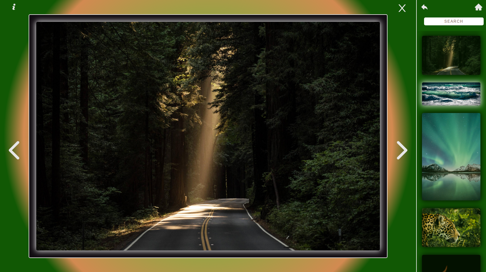

MG Photography
React.js | Node.js/Express.js | Emotion | Netlify | Heroku
Portfolio site built to sort and display modeling, photography, and art images through multiple galleries.
- Users may view landing page, select image galleries, and explore images
- Admin may log in to manage photos or update the sites images and security
- Soley developed by Joshua Diamond